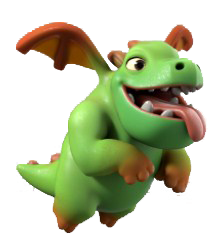

Barbarian
A Barbarian is a bold and reckless brute that never backs down from a fight. Its survival instincts are rooted from its physical brawn. That’s why its strength is brutish and incomparable. When Barbarians are collected in a group, their savage nature is amplified even more—wreaking havoc to whatever place they come upon to.

Archer
An archer knows no limit when it comes to sharpshooting over long distances. Its aim is as keen as an eagle’s eyes. Its dexterity is topnotch—standing above all else. With excellent aim and exceptional dexterity, nothing can stand between an archer and its inescapable arrows.

Giant
No one belittles the gentle giant! It might look friendly and calm, but trust me, you should never mess with a giant! It has enormous strength and overwhelming tenacity. It’s slow, yes, but it also has the sturdiest build among them all.
Goblin
Do you know what’s going on in a goblin’s mind? I know. Its mind is full of thoughts about loots, money, and everything shiny! Goblins are greedy creatures. They’ll do anything just to get their hands on some treasure. Just one swift whiff of news about sizable resources and it’s off to claim the prize with its blazing-fast feet.

Wall Breaker
Nothing makes a Wall Breaker happier than…what else…breaking walls! It’s all bones and dead both on the inside and outside, but it’s still very intent on making things go KABOOOM! With a bomb on hand and determination like no other, a Wall Breaker will fulfill its goal until the end of its unlife.
Wizard
A Wizard is an epitome of greatness in magic. It can dish out highly destructive spells with a flick of a finger. That is why it’s a fearsome opponent. One wrong move and you’re marked for life by a Wizard’s wrath!
Balloon
When a Wall Breaker takes to the sky, it becomes a Balloon. Same intent, same goal, same determination, but different priority. This time around, it’s the defenses that it’s after! Still with a bomb on hand, everything on the ground is in for huge blast!

Healer
A Healer does what it does best—heal! Its compassion is above everything. With its white wings and its angelic visage, it hovers over allies to protect and keep them safe from danger.
Dragon
Ruthless and merciless, a Dragon is a mighty force to be reckoned with. It is very destructive, both in the air and on the ground. Its power is unparalleled—making it a fearsome opponent to encounter. Whenever a Dragon is present on the battlefield, only devastation awaits everyone who unluckily stumbles upon it.
Pekka
P.E.K.K.A.—just what does this mean?! What’s only known is that P.E.K.K.A. is an armored knight with unbelievable defense. Its offense is also nothing to joke about. And its HP? Tremendous! This warrior is extraordinary, so watch out enemies!

Baby Dragon
The Baby Dragon may be a baby, but it’s still a Dragon. And because it’s a Dragon, it’s very powerful albeit a bit less than its fully-grown counterpart. The thing about the Baby Dragon is that it shines the brightest when it’s alone. Being alone causes it to become so enraged that it will obliterate everything that crosses its path.
Miner
The special skill of a Miner is digging tunnels underground. With a skill as grounded as digging, Miners are capable of gaining temporary invincibility as well as bypassing walls. A Miner sure is sneaky!
Minion
This creature born from another world was able to materialize because of the Dark Elixir. The Minion terrorizes both the land and air in order to bring chaos and destruction. Although its existence in the world is weak, it’s best not to underestimate it.

Hog Rider
The Hog Rider is a unit that has mastered the art of riding leaping pigs. Mind you, mastering the art of riding leaping pigs can do wonders. In fact, because the Hog Rider has mastered this unique skill, no wall can stop it anymore! A world of hurt is the only thing waiting for those who are coward enough to seek protection from walls.

Valkyrie
The Valkyrie is the mighty wielder of the double axe! It’s unstoppable with its perfectly trained body and brutal axe skills. Foes can’t help but cower in her presence. Units, buildings, everything—nothing is safe in the face of the Valkyrie!

Golem
A Golem is a colossal mass of rocks. That being said, a Golem obviously specializes in defense. Its impenetrable skin absorbs attacks of all kinds. And if it so happens that it gets damaged, it will simply split into tinier golems. Such a terrifying beast!
Witch
The Witch never fights alone! Whenever it appears, a massive horde of undead is unleashed as well. The Witch is not only a witch, it’s also a necromancer! The spirits of the dead are its allies, so beware everyone who tries to oppose the Witch!

Lava Hound
A Lava Hound has a temper as hot as its flames. It’s so resilient that it won’t even succumb to death without a fight. As a matter of fact, once it is pushed to its limits, it will split to smaller lava pups that can fight just as hard.

Barbarian King
As his title indicates, the Barbarian King is the king of all barbarians! He is the strongest of them all, and the mightiest to boot. His offense and defense are out of this world! Only doom awaits those who are unlucky enough to encounter him. Surrender or die!
Archer Queen
As her title indicates, the Archer Queen is the queen of all archers! She is the best ranged warrior of them all, and the most skillful one to boot. Her attacks are very destructive! One hit is enough to cause tremendous pain. Once you’re in the scope of the Archer Queen, your safety is no longer guaranteed.
Grand Warden
The Grand Warden is a battle scholar whose power towers above everything. He specializes in supporting other units and empowering them. With his presence in the battlefield, foes can’t help but surrender and yield to the overwhelming threat in front of them.